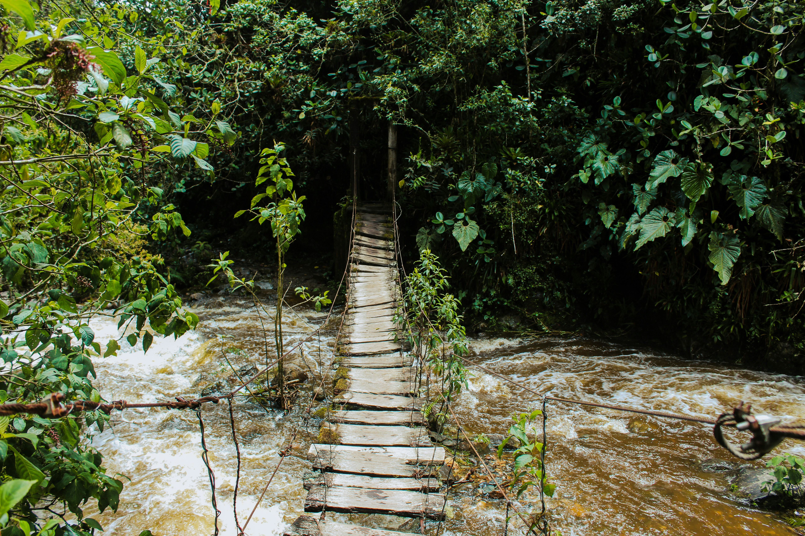
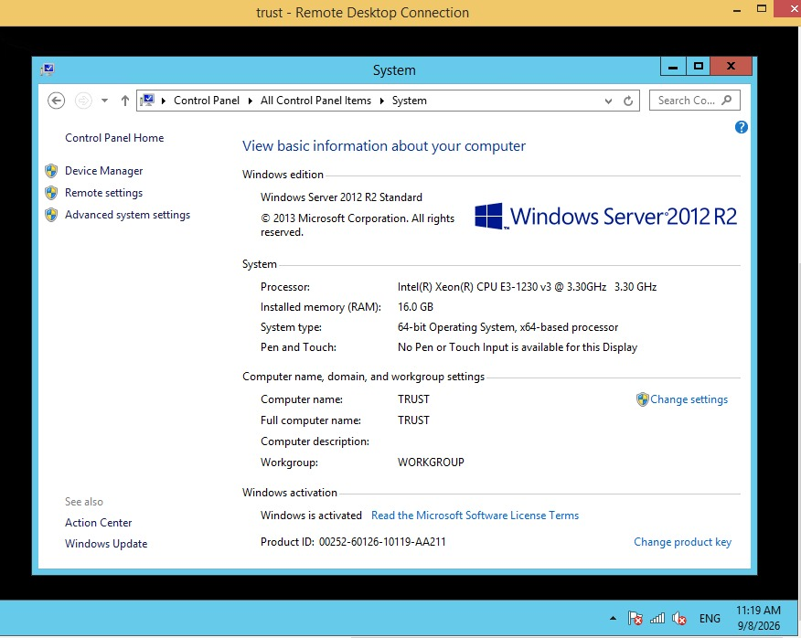
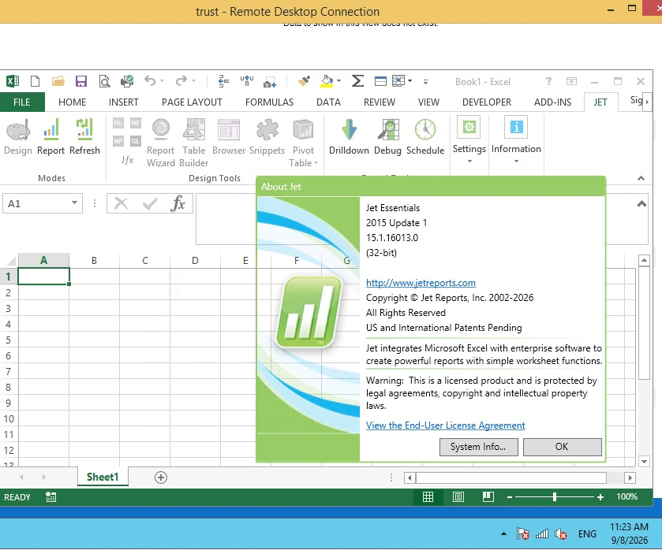

Kartu Kuning
Dana Sehat & Santo YusufPertemuan Kedua
Menjawab
Pertanyaan Anda
Ketua · Bendahara · Sekretaris Lingkungan
Latar belakang & Open Question
Kenapa program ini ada. Lalu seluruh pertanyaan dan keraguan teman-teman dijawab satu per satu.
Teknis & Simulasi
Kami akan peragakan langkah demi langkah, lebih rinci daripada di Zoom.
Kalau yang lama sudah bagus,
kenapa bikin baru?

Dua belas tahun.
Masih bisa dilewati — tapi sudah bergoyang.
Jembatan baru perlu dibangun sebelum yang lama runtuh — supaya bantuan dapat disalurkan tanpa terhenti.
Kenapa ketika mengajukan
ketiga peran itu harus pakai
surat pernyataan?
Link formulir pengajuan itu terbuka. Siapa saja bisa mengisinya — termasuk yang tidak berhak.
Apakah datanya valid, apakah benar dari lingkungan itu, apakah isinya sesuai.
Tanda tangan Ketua Lingkungan, dan stempel lingkungan.
Orang mengganti-ganti peran tanpa sepengetahuan lingkungannya sendiri.
Surat pernyataan adalah satu-satunya cara kami tahu
pengajuan itu benar dari teman-teman.
Kenapa harus tiga peran?
Ini bukan aturan baru. Bendahara Paroki
sudah lama menjalankannya.
Mengisi form lengkap beserta seluruh dokumen pendukung, lalu mengirimkannya ke paroki.
Mengecek tanggal masuk & keluar rumah sakit, kesesuaian nama KTP dengan Kartu Keluarga Gereja, dan seluruh dokumennya.
Menandatangani slip transfer. Tidak memeriksa berkasnya satu per satu — itu sudah dipercayakan kepada tim.
Setiap penerimaan sumbangan & pengeluaran uang dari gereja perlu minimal dua tanda tangan.
Markus 6:7Saya tidak punya laptop.
Mohon maaf.
Kami tidak mempertimbangkan
teman-teman yang tidak punya laptop
ketika merencanakan program ini.
Kami merancangnya dari satu sudut pandang saja.
Program ini dibuat dari sudut pandang orang yang punya laptop dan terbiasa bekerja di laptop.
Membuka Google Sheet lewat HP sangat tidak nyaman — layarnya terlalu kecil untuk tabel selebar itu. Karena itu versi HP sengaja tidak kami buat: kami kira justru akan menyulitkan.
Jadi sekarang kami buatkan.
Web app sendiri, dirancang untuk HP sejak awal.
Fungsinya sedang dikerjakan sekarang. Yang teman-teman lihat hari ini baru tampilannya.
Sudah biasa dengan laptop
→ silakan mulai sekarang.
Ingin memakai HP
→ mohon tunggu sampai selesai diuji.
Dengan sistem ini,
artinya kami tidak dipercaya.
Penyelewengan terjadi kalau dua hal bertemu.
Niat
Bukan urusan kami. Itu urusan Romo, dan jauh lebih besar daripada yang bisa kami tangani.
Kesempatan
Inilah yang bisa kami kerjakan. Sistemnya diperbaiki supaya kesempatan itu diperkecil — bukan orangnya yang dicurigai.
Kalau bendahara paroki tidak percaya,
kami akan datang sendiri mengecek.
Kami tidak datang.
Yang mengecek adalah teman satu lingkungan sendiri. Pembuatan dan pengecekannya 100% terjadi di lingkungan.
Yang berubah bukan kepercayaannya —
tapi cakupannya.
Diverifikasi secara mandiri di lingkungan masing-masing — bukan oleh orang luar yang datang memeriksa.
Pekerjaan kami makin banyak.
| # | Cara lama | Cara baru |
|---|---|---|
| 1 | MInput ke Excel |
MInput ke Google Sheet, lalu klik Ajukan Pengecekan |
| 2 | MPrint laporan |
MJalan ke rumah Checker menyerahkan Kartu Kuning |
| 3 | MUpload file Excel ke Dropbox |
CCocokkan Kartu Kuning dengan hasil input di Google Sheet |
| 4 | MRJalan ke rumah Ketua Lingkungan minta tanda tangan |
CTekan tombol Valid |
| 5 | MJalan ke gereja/ATM untuk setor DSSY |
RTerima email, tekan tombol Rilis Laporan |
| 6 | MMenunggu tanda terima dari kasir paroki |
MJalan ke gereja/ATM untuk setor DSSY |
Dulu Bendahara Lingkungan mengerjakan langkah 1 sampai 6 — semuanya, sendirian. Sekarang tiga.
Dan perjalanannya tidak bertambah — hanya berpindah tujuan: dulu ke rumah Ketua minta tanda tangan, sekarang ke rumah Checker membawa Kartu Kuning.
Saya gaptek,
tidak paham komputer.
Teman-teman tidak
mengerjakannya sendirian.
Tim Bendahara Paroki akan mendampingi. Datang saja ke gereja — ada tim yang standby untuk membantu secara teknis.
Tidak perlu membuat janji. Tidak perlu menunggu jadwal pelatihan.
Masih ada yang
mengganjal?
Yang membuat jembatannya bergoyang
1 / 2

Panah kiri/kanan untuk berpindah · Esc untuk menutup